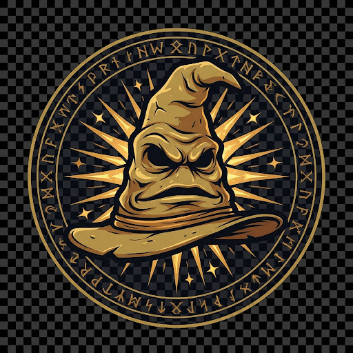

Courage • Chivalry
Gryffindor
Where dwell the brave at heart. Their daring, nerve, and chivalry set Gryffindors apart.
School of witchcraft & wizardry
The Annual Ceremony of allocation
Discover Your True House — Where Bravery, Wisdom, Loyalty & Ambition Meet Their Calling

There's nothing hidden in your head the Sorting Hat cannot see. So, try me on and I will tell you where you ought to be.
— THE SORTING HAT'S SONG. FEAST OF —
Each house carries its own grand lore crest and noble lineage founded by the gratest witches and wizards of their age.
Courage • Chivalry
Where dwell the brave at heart. Their daring, nerve, and chivalry set Gryffindors apart.
Wit • Wisdom
For those of wit and learning, where those of true intellect will always find their kind.
Loyalty • Patience
Where they are just and loyal, patient, true, and unfraid of diligent scholastic toil.
Ambition • Cunning
Here you will find real friends, whose cunning folk use any means to achieve their ends.
Hogwarts was founded by the four greatest witches and wizards of the age - Godric Gryffindor , Helga Hufflepuff , Rowena Ravenclaw and Salazar Slytherin .
Rowena chose the location after dreaming of a warty hog leading her to a cliff by a lake, hence the name Hogwarts. The founders found a Pensieve buried there and sealed the castle with Unplottable charms .
Soon after, Slytherin fell out with the others. He wanted to teach Dark Arts and admit only pure-bloods.
Slytherin left Hogwarts, but not before building the Chamber of Secrets deep underground. He sealed basilisk inside, enchanted so only his true heir could open it.
In the 13th century, Floo Powder was invented, but Hogwarts Heads refused to connect its fireplaces to the Floo Network . Around , the Triwizard Tournament was started.
In the 18th century when plumbing was added, Corvinus Gaunt hid the Chamber entrance behind sinks in the second-floor girls' bathroom .
In the Tudor era, four professors formed The Keepers to hide a rare ancient magic . They mentored Isidora Morganach .
Isidora turned dark. She started extracting pain and emotions from others to store in repositories .
In - , another fifth-year arrived. He faced a goblin, Ranrok , and his ally Victor Rookwood . After defeating both in the Keepers' Caverns , his mentor Professor Fig died.
The castle also hid Cursed Vaults , older than Hogwarts itself. Student Jacob obsessed over them and accidentally unleashed a curse that froze the whole castle.
In , Jacob's younger sibling enrolled and broke into all five vaults . A secret org called R was also hunting them. Defence Professor Patricia Rakepick pretended to help but was actually from R . She murdered Rowan Khanna . The students formed the Circle of Khanna and found the final vault under the Black Lake .
In the 1910s, Leta Lestrange was bullied and befriended Newt Scamander . In 1926, during Grindelwald's War , security was increased under Headmaster Dippet .
The Chamber was first opened in by Tom Riddle . Myrtle Warren was killed, and Riddle framed Hagrid , leaving his diary Horcrux behind.
In the 1970s, James Potter , Sirius Black , Remus Lupin and Lily Evans attended. The Marauders were infamous. They graduated in 1978 as the First Wizarding War raged.
Hogwarts Sorting Logic • System Telemetry v9.4